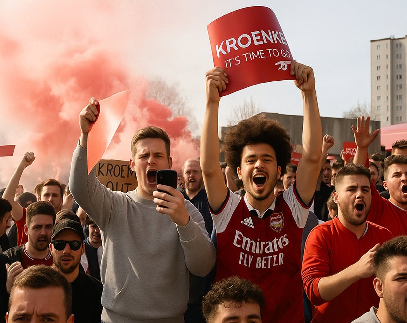

As a design strategist in the Innovation Lab, I developed new sports media concepts targeting Generation Z, conducting research, validating and pitching concepts to key stakeholders.
Company
Sports Media
Product
Football websites/apps
My role
Design Strategist
Year
2024
The challenge was to understand Generation Z behavior - how they consume sports media, communicate, what content they prefer, their fandom behaviors, and opportunities to create new sports media concepts.
The company's current product ecosystem targets older generations, and they needed to expand their reach to Generation Z (ages 18-24).
How does the Generation Z consume sports media? How do they follow matches and news? How do they interact with the content in the different channels?

Football fans ages 18-24 who are passionate about the sport and follow matches and news, and share content with their friends.
Create two concepts for the two underserved opportunities previously found in the research